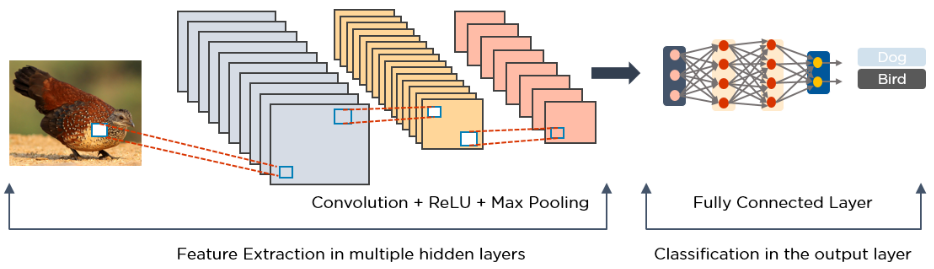
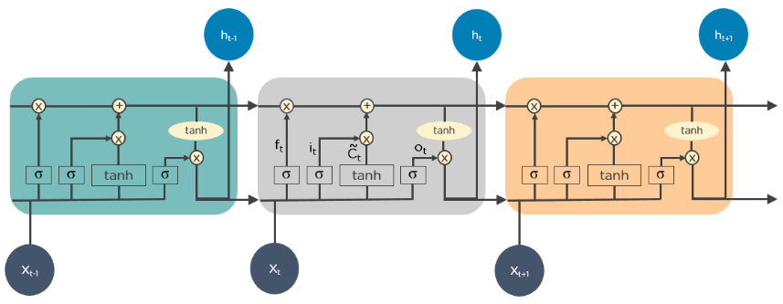
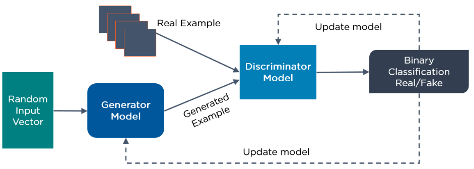
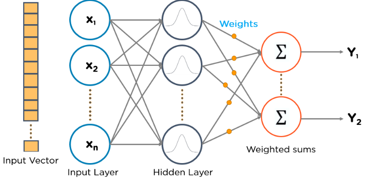
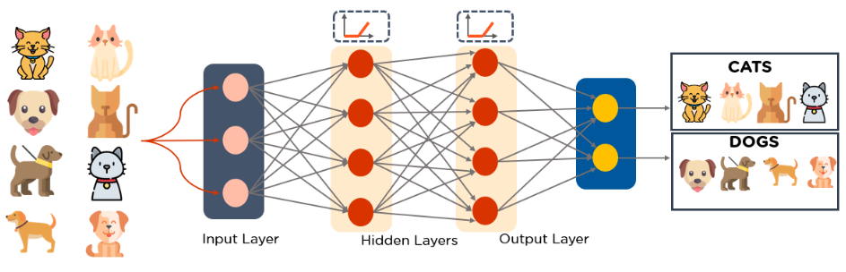
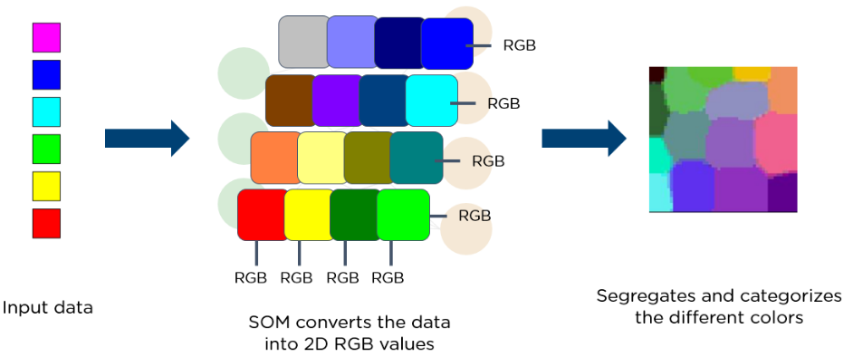

Here is the list of top 10 most popular deep learning algorithms:
Deep learning algorithms work with almost any kind of data and require large amounts of computing power and information to solve complicated issues. Now, let us, deep-dive, into the top 10 deep learning algorithms.
CNN's, also known as ConvNets, consist of multiple layers and are mainly used for image processing and object detection. Yann LeCun developed the first CNN in 1988 when it was called LeNet. It was used for recognizing characters like ZIP codes and digits.
CNN's are widely used to identify satellite images, process medical images, forecast time series, and detect anomalies.
CNN's have multiple layers that process and extract features from data:
Fully Connected Layer
Below is an example of an image processed via CNN.

LSTMs are a type of Recurrent Neural Network (RNN) that can learn and memorize long-term dependencies. Recalling past information for long periods is the default behavior.
LSTMs retain information over time. They are useful in time-series prediction because they remember previous inputs. LSTMs have a chain-like structure where four interacting layers communicate in a unique way. Besides time-series predictions, LSTMs are typically used for speech recognition, music composition, and pharmaceutical development.
Below is a diagram of how LSTMs operate:

RNNs have connections that form directed cycles, which allow the outputs from the LSTM to be fed as inputs to the current phase.
The output from the LSTM becomes an input to the current phase and can memorize previous inputs due to its internal memory. RNNs are commonly used for image captioning, time-series analysis, natural-language processing, handwriting recognition, and machine translation.
An unfolded RNN looks like this:

Here is an example of how Google’s autocompleting feature works:

GANs are generative deep learning algorithms that create new data instances that resemble the training data. GAN has two components: a generator, which learns to generate fake data, and a discriminator, which learns from that false information.
The usage of GANs has increased over a period of time. They can be used to improve astronomical images and simulate gravitational lensing for dark-matter research. Video game developers use GANs to upscale low-resolution, 2D textures in old video games by recreating them in 4K or higher resolutions via image training.
GANs help generate realistic images and cartoon characters, create photographs of human faces, and render 3D objects.
Below is a diagram of how GANs operate:
RBFNs are special types of feedforward neural networks that use radial basis functions as activation functions. They have an input layer, a hidden layer, and an output layer and are mostly used for classification, regression, and time-series prediction.
See this example of an RBFN:

MLPs are an excellent place to start learning about deep learning technology.
MLPs belong to the class of feedforward neural networks with multiple layers of perceptrons that have activation functions. MLPs consist of an input layer and an output layer that are fully connected. They have the same number of input and output layers but may have multiple hidden layers and can be used to build speech-recognition, image-recognition, and machine-translation software.
Below is an example of an MLP. The diagram computes weights and bias and applies suitable activation functions to classify images of cats and dogs.

Professor Teuvo Kohonen invented SOMs, which enable data visualization to reduce the dimensions of data through self-organizing artificial neural networks.
Data visualization attempts to solve the problem that humans cannot easily visualize high-dimensional data. SOMs are created to help users understand this high-dimensional information.
Below, see a diagram of an input vector of different colors. This data feeds to a SOM, which then converts the data into 2D RGB values. Finally, it separates and categorizes the different colors.

DBNs are generative models that consist of multiple layers of stochastic, latent variables. The latent variables have binary values and are often called hidden units.
DBNs are a stack of Boltzmann Machines with connections between the layers, and each RBM layer communicates with both the previous and subsequent layers. Deep Belief Networks (DBNs) are used for image-recognition, video-recognition, and motion-capture data.
Below is an example of DBN architecture:

Developed by Geoffrey Hinton, RBMs are stochastic neural networks that can learn from a probability distribution over a set of inputs.
This deep learning algorithm is used for dimensionality reduction, classification, regression, collaborative filtering, feature learning, and topic modeling. RBMs constitute the building blocks of DBNs.
RBMs consist of two layers:
Each visible unit is connected to all hidden units. RBMs have a bias unit that is connected to all the visible units and the hidden units, and they have no output nodes.
RBMs have two phases: forward pass and backward pass.
Below is a diagram of how RBMs function:

Autoencoders are a specific type of feedforward neural network in which the input and output are identical. Geoffrey Hinton designed autoencoders in the 1980s to solve unsupervised learning problems. They are trained neural networks that replicate the data from the input layer to the output layer. Autoencoders are used for purposes such as pharmaceutical discovery, popularity prediction, and image processing.
An autoencoder consists of three main components: the encoder, the code, and the decoder.
The following image demonstrates how autoencoders operate:
Deep learning has evolved over the past five years, and deep learning algorithms have become widely popular in many industries. If you are looking to get into the exciting career of data science and want to learn how to work with deep learning algorithms, check out our AI and ML courses training today.
Do explore the frequently asked Deep Learning interview questions, and unlock your career as a data scientist!
If you have deep learning algorithm questions after reading this article, please leave them in the comments section, and Simplilearn’s team of experts will return with answers shortly.